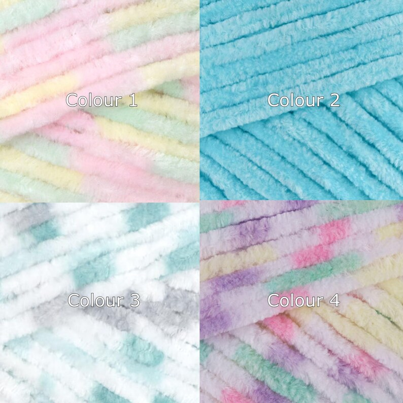
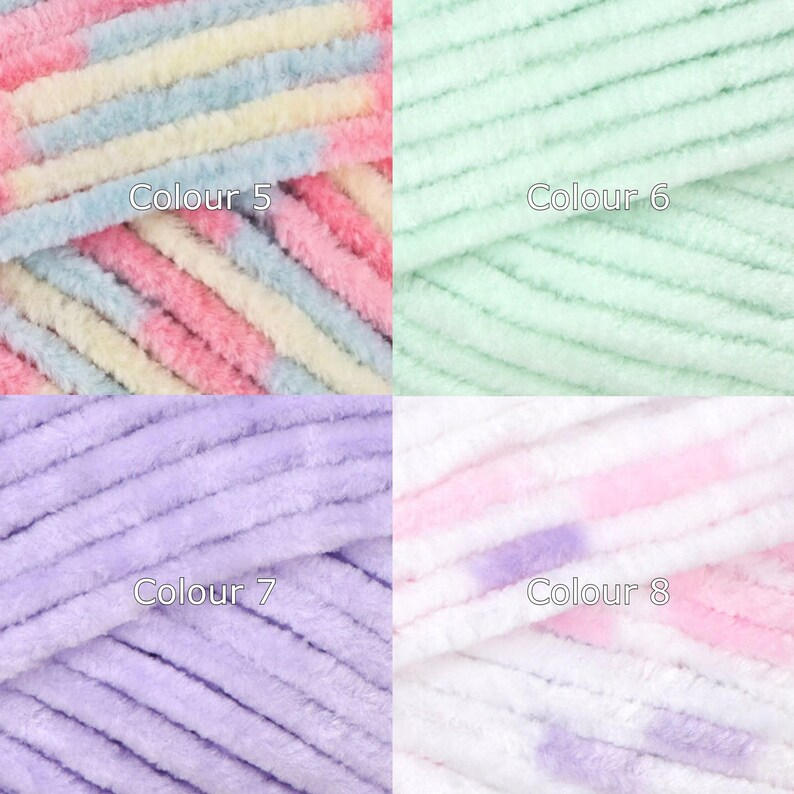
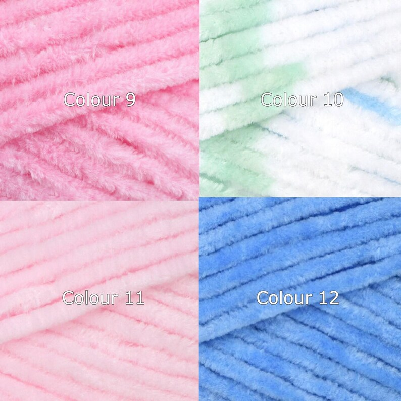
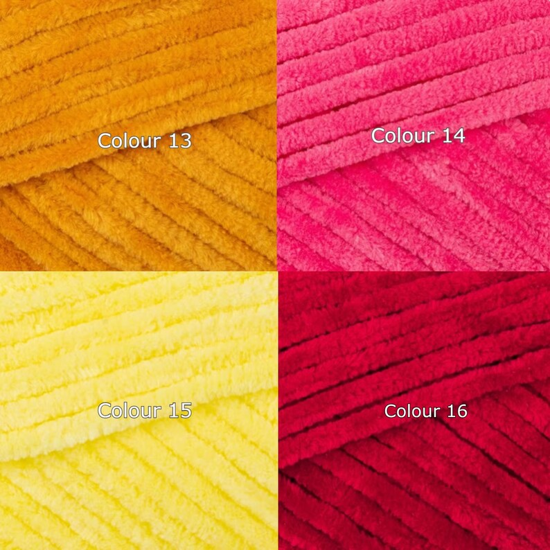
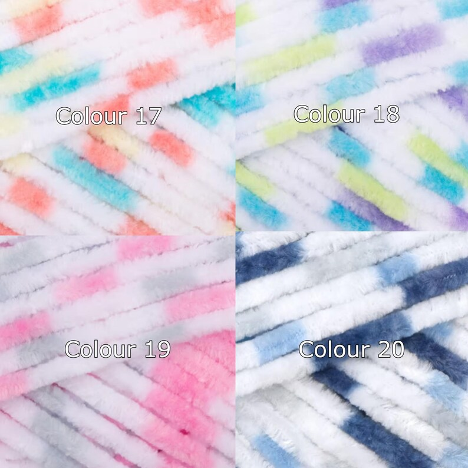

- Home
- Size guide
Sizes, measuring and colours
Everything is made to order, so nothing here is fixed. This page is really just so you know what to send me if you want something adjusted, and so you can see the yarn properly before you commit.
The standard sizes at a glance
Anything in this table can be changed. Ask before you buy and it costs nothing extra unless it takes a lot more yarn.
| What it is | How it is made as standard | Worth knowing |
|---|---|---|
| Cat and small dog hats | One regular size, with long ties | Made to fit Lola, who is a regular sized adult cat. The ties do a lot of the work, so there is some give. |
| Collars | About 30cm, or 12 inches, not counting the straps | That covers most cats and small to medium dogs. The same collar fits my cat and my border collie. |
| Kindle and e-reader sleeves | 5.5 inches wide by 7.5 inches long, roughly 14cm by 19cm | Measure yours against that. If it is bigger, or you keep a case on it, tell me and I will size up. |
| Switch 2 cases | Cut to the Switch 2, in thick chunky yarn | Switch 2 only, not the original Switch. It is for scratches in a bag, not for drops onto concrete. |
| Tamagotchi cases | Cut to each shell individually | Paradise, Uni, Smart, ON, MIX, Pix, and the original P1 and P2. Buttons and screen stay clear. |
| Coasters and bookmarks | Made in cotton rather than the soft chenille | Cotton copes with a hot mug and washes better. Different colour range to the chart below. |
| Baby star suit | 0 to 3 months, in four colours | If it is a gift for a baby not yet here, tell me the due date and I will size up a little. |
No tape measure in the house? Almost nobody has one. Take a strip of paper or a bit of string, wrap it round, pinch where it meets, then hold that against a ruler. It is accurate enough for this and far easier than wrestling a cat.
Hats
Measuring a cat, or a very tolerant small dog
You only need two numbers, and honestly neither has to be perfect. If you send nothing at all I will make the regular size, which fits most cats.
Getting it done without a fight
- Do it when they are half asleep, not when they are in the mood for a game
- String or a strip of paper beats a hard tape measure every time
- Long fur adds a centimetre or two of fluff, so measure to the skin if you can
- If it goes badly, give up and send me a photo of them next to something everyday, like a mug
If it turns up and it does not fit
Tell me. I will remake it in the right size or refund you, and I do not make a fuss about it. Cats vary a lot more than people expect and I would rather sort it than have a hat sat in a drawer.
Please do not force a hat onto a cat who has decided against it. Take it off, have a cup of tea, try again another day.
Collars
Measuring a neck
My standard collar is about 30cm, or 12 inches, not counting the straps that tie it on. That covers most cats and small to medium dogs. The same one fits my cat and my border collie, which gives you an idea of the range.
If your dog is bigger than a collie, or you have a kitten, send me the neck measurement and I will make it to that instead.
Please read this bit. These are dress up collars, not safety collars. They do not have a quick release buckle and they are not made to break away if they snag. Put one on for photographs, for a birthday, for the afternoon, and take it off when nobody is watching. Never leave one on an animal outdoors or unsupervised, and never use one to attach a lead.
Sleeves and cases
Kindles, Tamagotchis, consoles
Devices are easier than cats. Three numbers and the model name will do it.
Kindles and e-readers
The standard sleeve is 5.5 inches wide by 7.5 inches long, which is about 14cm by 19cm. Hold your reader against a ruler and see how it compares. If yours is larger, or you keep a hard case on it and want to leave that on, say so and I will make it bigger. It costs the same.
Tamagotchis
Each shell gets its own pattern, so I need to know which one you have. I already make cases for the Paradise, Uni, Smart, ON, MIX, Pix, and the original P1 and P2. If yours is not on that list, send me a photo with a ruler next to it and I will work it out.
Consoles and handhelds
The Switch 2 case is cut to the Switch 2 and made in thick chunky yarn. It is there to stop your keys scratching the screen in a bag. It is not armour and I would not trust it against a drop onto concrete.
For anything else, a Steam Deck, a 3DS, a Miyoo, whatever it is, give me the three measurements and whether you want the grips covered.
Hats for people
Human heads
One measurement
Take a tape around your head, just above the eyebrows and around the widest part at the back. That number and whether you like a hat slouchy or close fitting is all I need.
The beanies are made in the soft chenille, so they have a bit of stretch and they are warm without being scratchy.
A note on the yarn
The soft yarn I use for most things is a polyester chenille. It is very soft, it does not itch, and it is the reason people keep saying "so soft" in the reviews.
Coasters and bookmarks are cotton instead, because cotton takes heat and washing better. If you want something in cotton that is normally chenille, or the other way round, just ask.
Yarn
The twenty colours
These are the soft chenille shades. Most things in the shop can be made in any of them, and they are numbered the same way on the Etsy listings so you can just tell me a number.





A couple of honest warnings
Screens lie. These photographs are close but a colour can look warmer or cooler depending on what you are reading this on, and daylight will always differ from a photo.
Dye lots shift too. If you order the same colour twice a year apart, they might not be identical.
Want something that is not here? Ask. I can usually get hold of other shades, it just adds a few days while it arrives.
Still not sure?
Send me the numbers you have, or a photo, and I will tell you what will work. I would much rather answer a question now than remake something later.